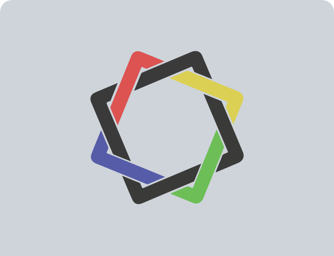
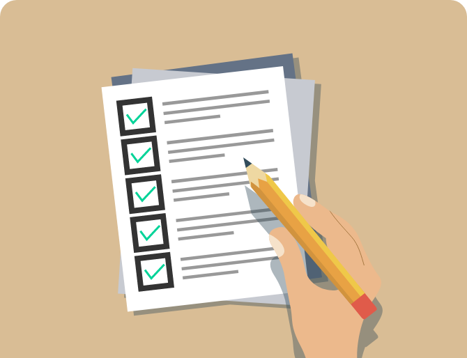
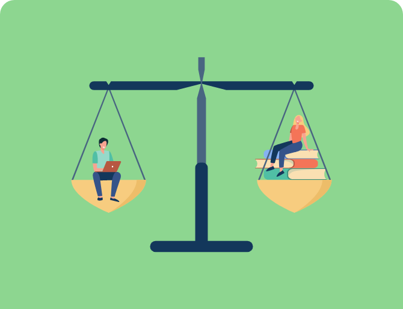
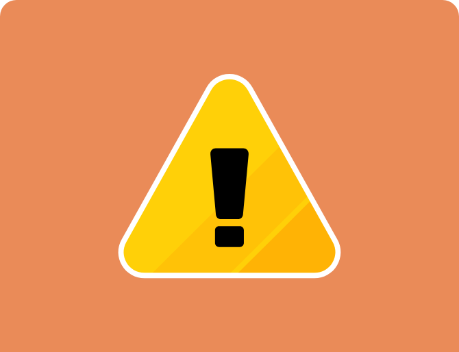

옥타그노시스(OCTAGNOSIS) 검사
8가지 사고력 기반 진로적성검사
-

한국진로적성센터에서 세계최초로 독자 연구 개발한 옥타그노시스(OGS) 검사는 인간의 8가지 사고력을 기반으로 15가지 성향, 60가지 인간역량 스키마와 선호도를 진단해내는 검사입니다.
-

104,060상의 임상결과와 누적된 진로연구 데이터들을 토대로 양적연구가 결집되어 기존 적성검사들이 판독하지 못했던 성향유형과 진로 데이터를 판독해낸 검사 입니다.
-

성향진단과 선호도진단으로 구성, 내가 잘하는 것과 좋아하는 것을 구분하여 파악할 수 있습니다.
-
정확하고 구체적인 결과를 도출하기 위해 평소 내 자신의 모습을 떠올리며, 각 문항들에 솔직하게 답변바랍니다.
-

본 검사와 결과를 포함한 저작물은 한국진로적성센터의 연구저작물로서, 저작권법에 의거하여 무단전재, 배포, 복제, 도용, 유포가 법으로 금지됩니다.
Copyright 2004. 한국진로적성센터. All rights reserved.
www.aptitude-x.com 02. 523. 7523
02. 523. 7523